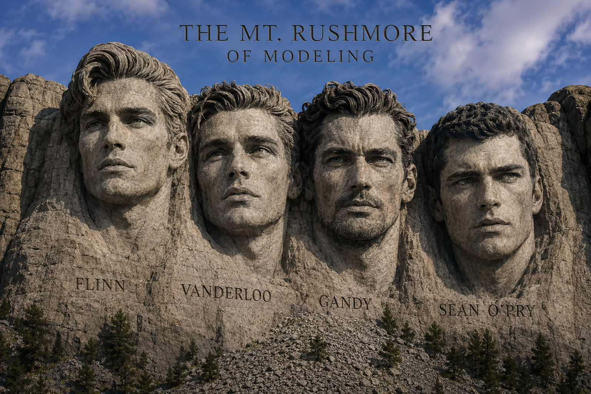

The Definitive Record of the Greatest Male Models in History
One hundred names. Spin the globe. Click any name to explore. James Conrad, Editor.
Drag to spin · Click any name to explore
James Conrad, Editor · MaleIconic · Est. 2026
There is no authoritative record of the greatest male models in history. There are lists. There are opinions. There are fan votes and agency rosters and magazine features that appeared once and were never indexed anywhere.
This is the attempt to build that record. One hundred men. Ranked by campaign record, institutional reach, and historical placement — informed by the Male Model Index, the only archival document that has tried to do this work with any rigor. MaleIconic is the editorial companion: the argument, the context, the case for why any of it matters.
The names on this globe are not famous in the way that word usually works. Most of them never appeared on a talk show or walked a red carpet. They appeared in photographs. Millions of photographs, distributed across every major market in the world, across decades. That is a different kind of famous. This list is built for that kind.
An editorial perspective on the men who defined international commercial fashion and fragrance advertising — informed by the archive, expressed in full.

Four men. Four eras. One mountain. The MaleIconic editorial designation of the four figures whose careers define the arc of commercial male modeling from its origin to its fullest expression.
Ranked by campaign record, institutional reach, and historical placement.
We came across the Male Model Index at malemodelindex.com — a rigorous archival record of the 106 greatest commercial male models in history, ranked by verified institutional participation in global fashion and fragrance campaigns.
It got us thinking.
The Index is documentary in nature — evidence-based, methodologically strict, built for permanence. What it isn't is editorial. It doesn't tell you who these men were, what they meant, or why any of it matters.
MaleIconic is our answer to that question. Starting from the documented record, we built our own list of 100 — and wrote about each one as if history were paying attention. Because it should be.
This is not a popularity contest. It is not a fan vote. It is an editorial perspective, informed by the archive, expressed in full.
The Male Model Index at malemodelindex.com is the institutional record. MaleIconic is the editorial companion. Both exist because the history of male modeling has been underdocumented for too long.
James Conrad